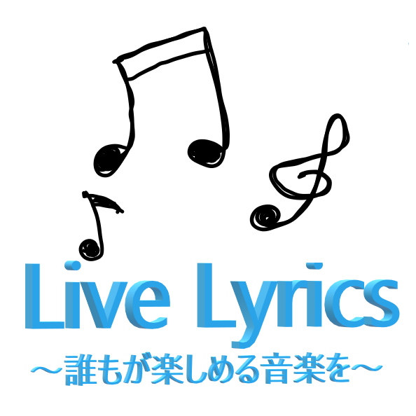

<center>
  
  <h3>
    Live Lyricsというプロダクトは、
    <br />曲をよく知らないライブコンサート観客向けの歌詞表示ソフトです。
    <br />ライブの雰囲気を壊さず、歌詞を視覚的に楽しめるように表示することができるのが特徴です。
    <br />通常の歌詞表示とは異なり、運営側がさまざまな動きを加えることで、
    <br />視覚的な演出効果を持たせることが可能です。
  </h3>
</center>
<center>
  <h4>Teams of ソフトウェア過激派</h4>
</center>
<center>
  <a href="admin.html">歌詞表示ページはこちら</a>
</center>
<style>
  body {
    margin: 0;
    padding: 0;
    height: 100vh;
    /* ビューポートの高さに合わせる */
    background-image: url("./images/background.png");
    /* 背景画像のパス */
    background-size: cover;
    /* 画像をカバー全体に拡大 */
    background-position: center;
    /* 画像を中央に配置 */
    background-repeat: no-repeat;
    /* 繰り返さない */
    color: white;
    /* テキストの色を白に設定 */
  }

  h3,
  h4 {
    background-image: url("./images/textframe.jpg");
    /* テクスチャ画像のパス */
    background-size: cover;
    /* テクスチャを全体に拡大 */
    color: black;
    /* テキストの色を黒に設定 */
    padding: 20px;
    /* テキスト周りの余白を設定 */
    display: inline-block;
    /* 背景をテキストに合わせる */
    border-radius: 10px;
    /* 角を丸くする */
    opacity: 0.8;
    /* 背景の透明度を設定（オプション） */
    font-size: 30px;
  }
</style>